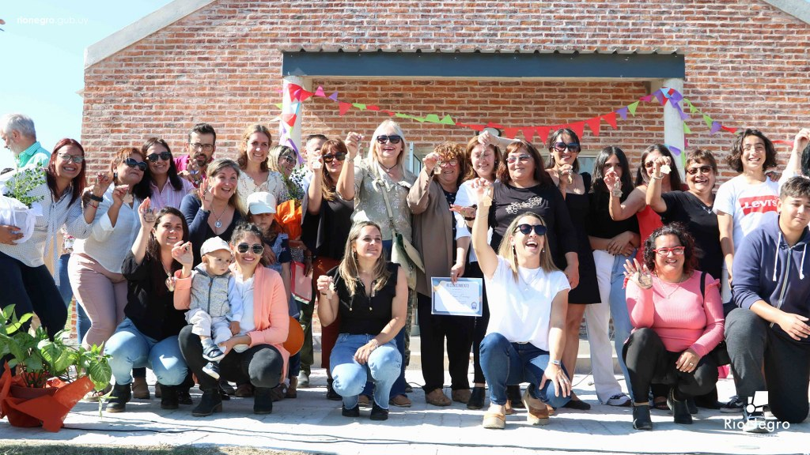
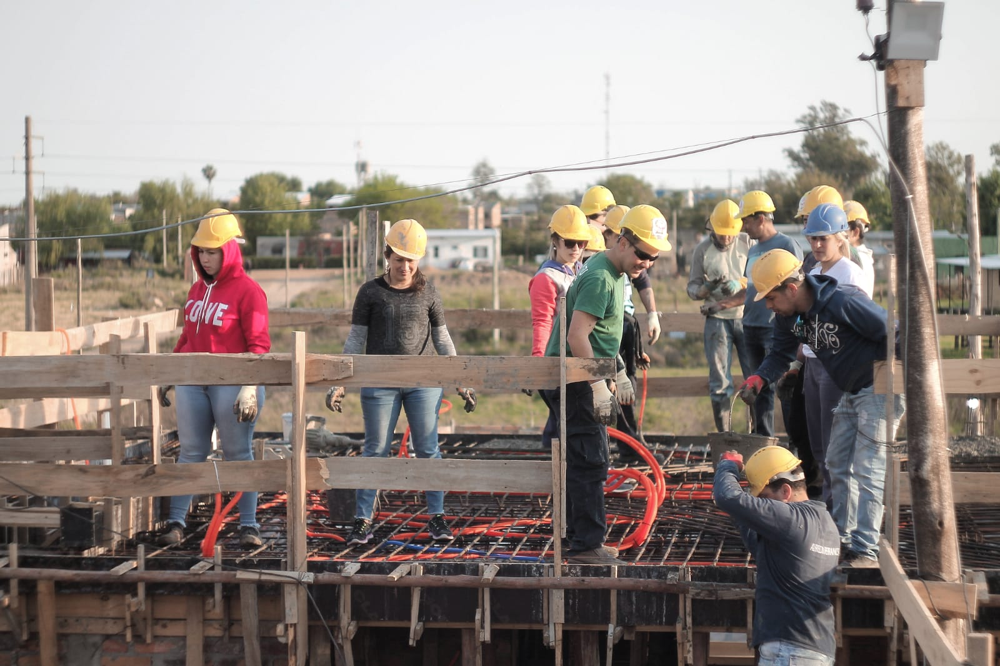
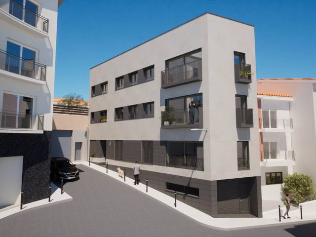

Sobre la Cooperativa Nuevo Amanecer
Nuestra historia
La Cooperativa Nuevo Amanecer nació del esfuerzo conjunto de familias trabajadoras que soñaban con un hogar digno. Desde el año 2020, nos hemos unido para construir no solo viviendas, sino también una comunidad fuerte, participativa y solidaria.
Valores que nos guían
- ✔ Solidaridad: cada paso lo damos en conjunto.
- ✔ Transparencia: todas las decisiones son compartidas.
- ✔ Participación: todas las voces cuentan.
- ✔ Esfuerzo colectivo: cada logro es de todos.
Nuestro equipo
Contamos con un equipo comprometido de arquitectos, gestores sociales y vecinos que aportan su tiempo y experiencia para que el proyecto avance día a día.
¿Qué hemos logrado?
Actualmente ya hemos construido más de 20 viviendas, y seguimos creciendo con nuevas etapas. Nuestra meta es seguir sumando familias a esta gran comunidad cooperativa.
